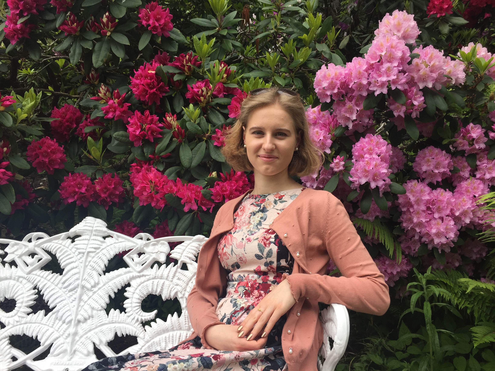
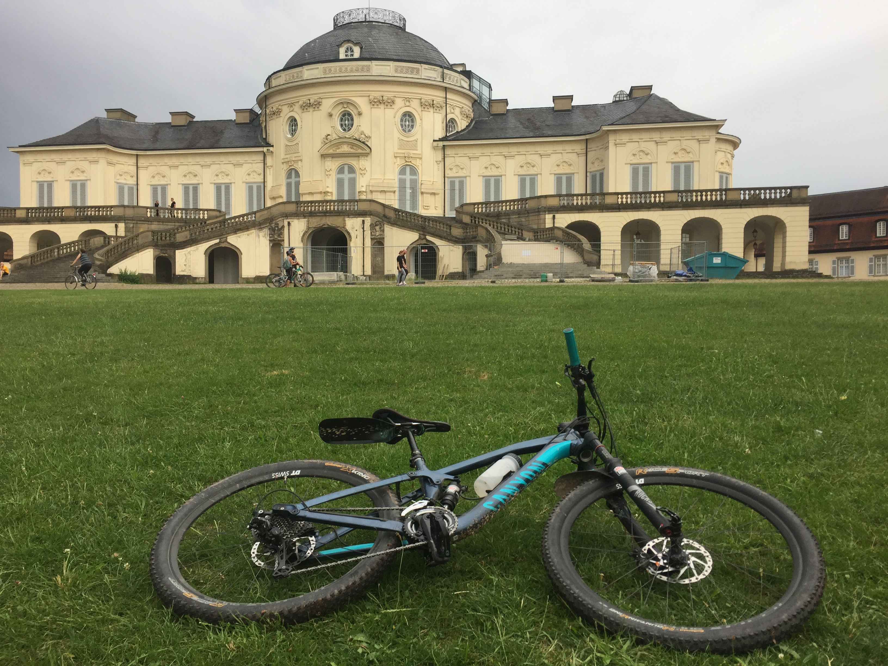
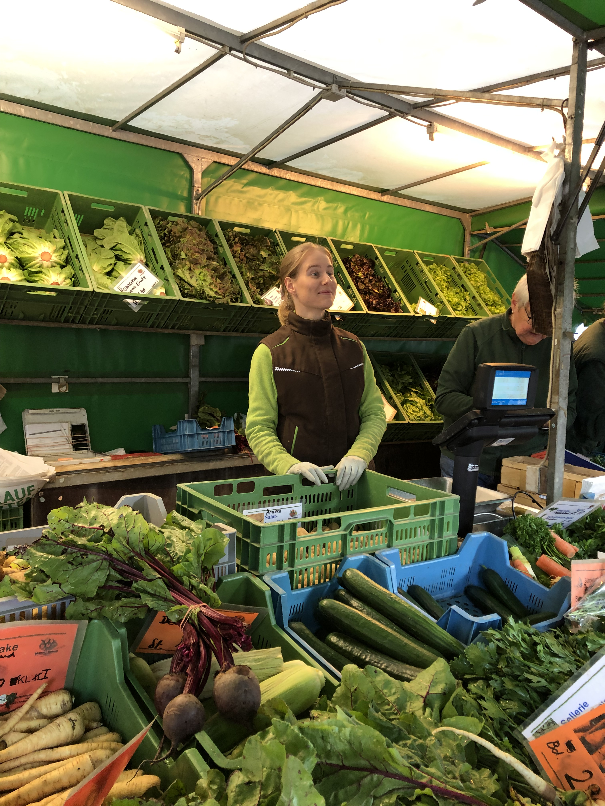
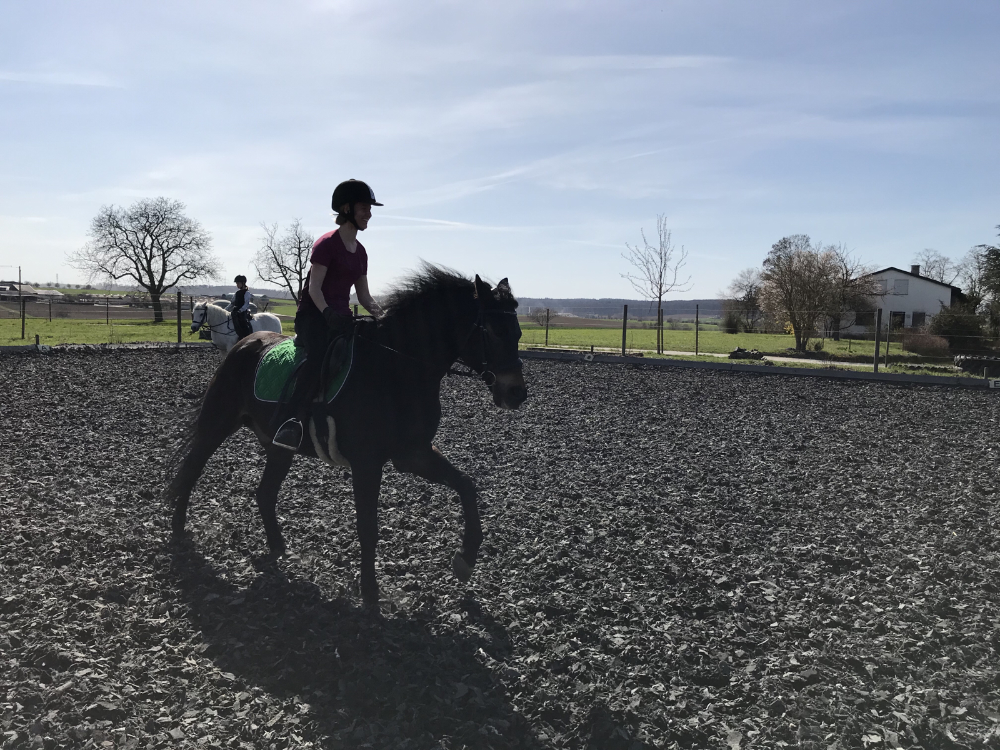
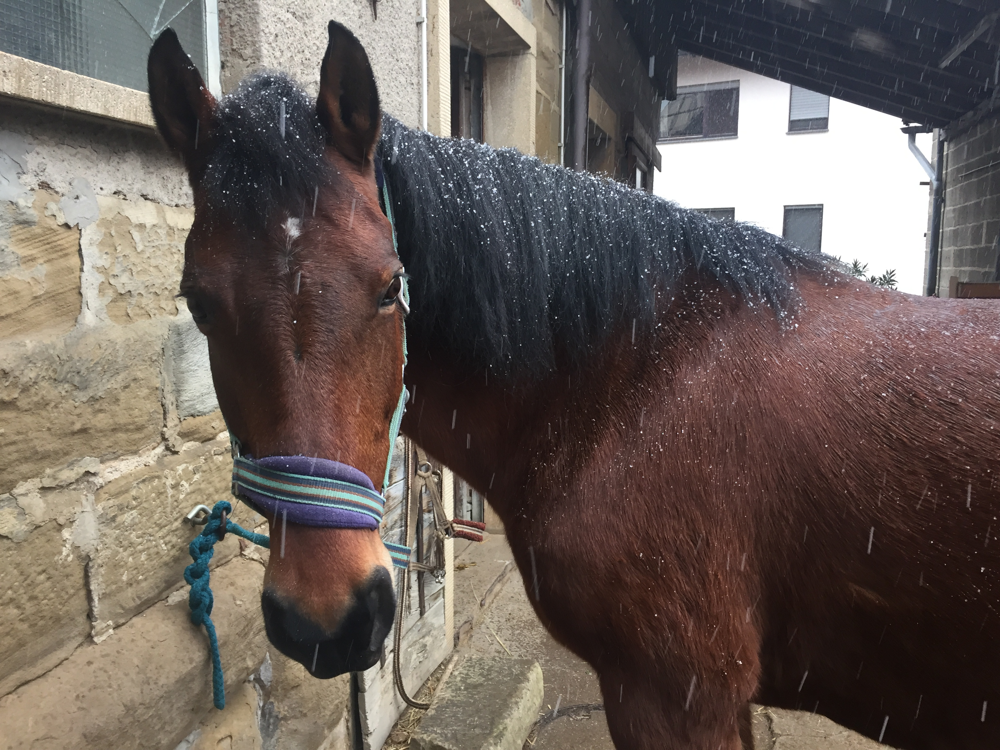
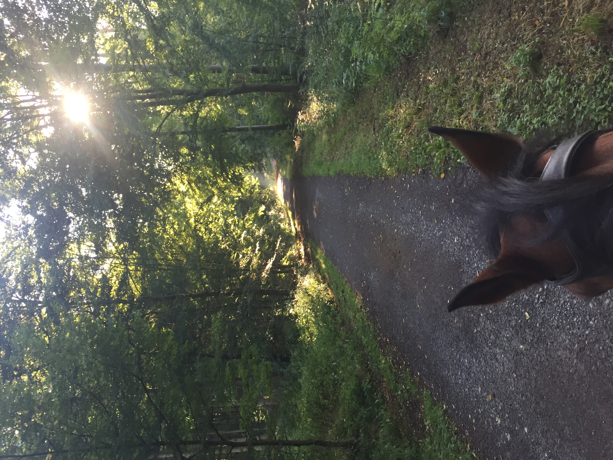

Das Bild entstand im Rahmen eines kleinen Fotoprojektes meiner Klasse auf dem TG.

Im Juni diesen Jahres habe ich die Insel Mainau besucht

Ich fahre sehr gerne Mountainbike und es gibt eine wunderschöne Strecke, die zum Schloss Solitude führt, welches unweit meines Wohnortes liegt.

Ich habe vier Jahre lang bei dieser Gärtnerei gearbeitet und habe das Gemüse im Team immer Samstags auf dem Wochenmarkt in Ditzingen verkauft. Um 5:30 Uhr morgens ging's los.

Wir haben eine Streuobstwiese mit mittleiweile leider nur noch 42 Bäumen, die alle mindestens 100 Jahre alt sind. Ich übernehme meist das Mähen, da mein Vater Heuschnupfen hat.

Der Strauch im Hintergrund (in dem ich schon fast drinhänge) ist ein Haselnussstrauch und gehört mir. Ich habe ihn als Setzling von meiner Oma bekommen als ich noch ein kleines Kind war und habe ihm über die letzten mehr als zehn Jahre beim Wachsen zusehen können und habe mich sehr gefreut, als er seine ersten Nüsse trug.

Außerdem kann ich reiten. Auf meinem letzten Hof war ich sehr glücklich und habe mich sehr zu Hause gefühlt. Bei Reitkursen habe ich immer die Kinder betreut. Auf dem Bild reite ich Pepsi, einen 13-jährigen New-Forrest-Pony-Wallach. Normalerweise ist diese Rasse sehr viel kleiner.

Das ist mein Lieblingspferd Flicka. Sie ist weder hübsch, noch groß, noch elegant. Wir waren aber ein Dreamteam, weil auch sie gerne in Action war. Mit ihr habe ich alleine stundenlange Ausritte unternomen, bin vollgas die Hügel hinaufgallopiert und über Bäume gesprungen. Das hat sich sonst keiner getraut. Tatasächlich ist Flicka schon 21, aber das merkt man ihr nicht an. Sie könnte auch zehn Jahre jünger sein.

Das ist natürlich mein liebster Ausblick. Morgens allein im Wald war es immer magisch, vor allem, wenn es geregnet hatte. Ich habe fast immer Rehe zu sehen bekommen.